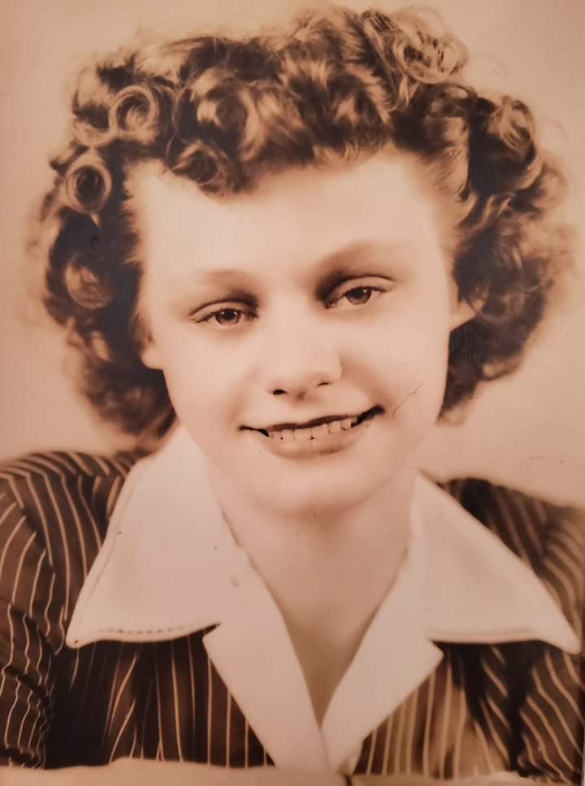

Our Family Story

My grandmother, Leona, and her grandparents moved next door to the Hovanders around 1932. So, the story
goes, my great-great grandfather owned a bull. The Hovanders owned prize cattle at the time. As there
was no fence around the Hovander’s property at the time, the bull would wander onto the Hovander’s
pastures and courted several cows, if you know what I mean.
Mr. Hovander wasn’t so happy that his prize cattle became breeders of cross-bred calves. I am guessing this Mr. Hovander was Otis, judging by the
year my grandmother lived next door. Other than the issue
surrounding the cattle, apparently, Hovander had a good relationship with my family. - Considering what I
have read about his personality, this would make sense.
This little spotlight on a random insignificant story shows how so many people can be connected through
one little place. What about you? What’s your Hovander Park story?
My Story

Visiting Hovander Park was apart of my childhood. I don’t recall many specifics, but I do remember touring the Hovander House and feeling like I traveled through time. I remember the glee of seeing the barnyard animals that only a child can possess. I walked the trails with my mother and grandmother. Upon reaching the watchtower, I would ascend the steps with such excitement, as if the tower reached the sky itself. When we finally made it to Tennant Lake, the ducks would fly by as if in salute to the day’s end.
What about you? What’s your story? Please share with us!